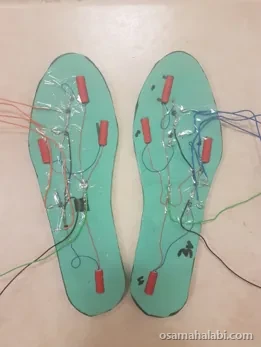

Tactile Footwear Interface to Create the Illusion of Walking on Different Surfaces
This project designs and develops an integrated feet-haptic insole paired with a mixed-reality environment to create the illusion of walking on virtual textures, enhancing the realism of virtual and augmented reality experiences. Where most texture-simulation research targets the hand, this system adapts tactile-communication mechanisms to the sole of the foot, accounting for the distribution and sensitivity of its mechanoreceptors, and drives an array of vibrotactile motors using two controllable parameters, PWM frequency and motor activation time, to render distinct surfaces such as sand, sponge, and wood. An algorithm tracks and analyzes user movement to synchronize tactile feedback with gait, and the system was evaluated through several virtual and augmented scenarios combining visual, auditory, and tactile cues. Experiments measured texture recognition rates and user satisfaction across participants, with intended applications spanning rehabilitation, gamification, training, and entertainment.